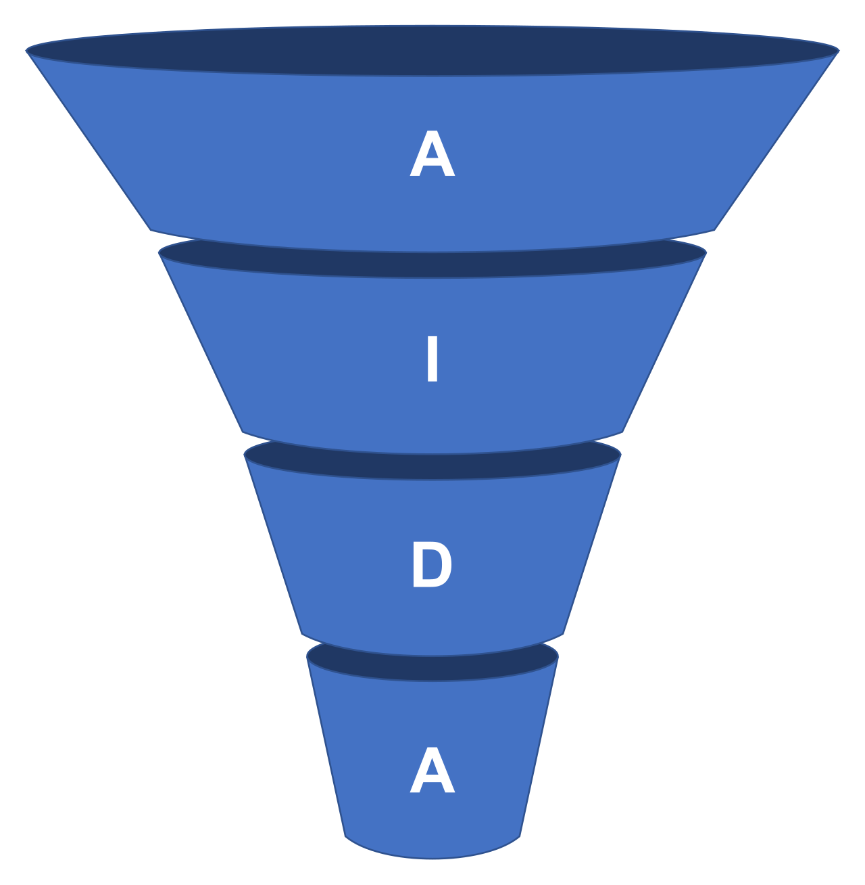
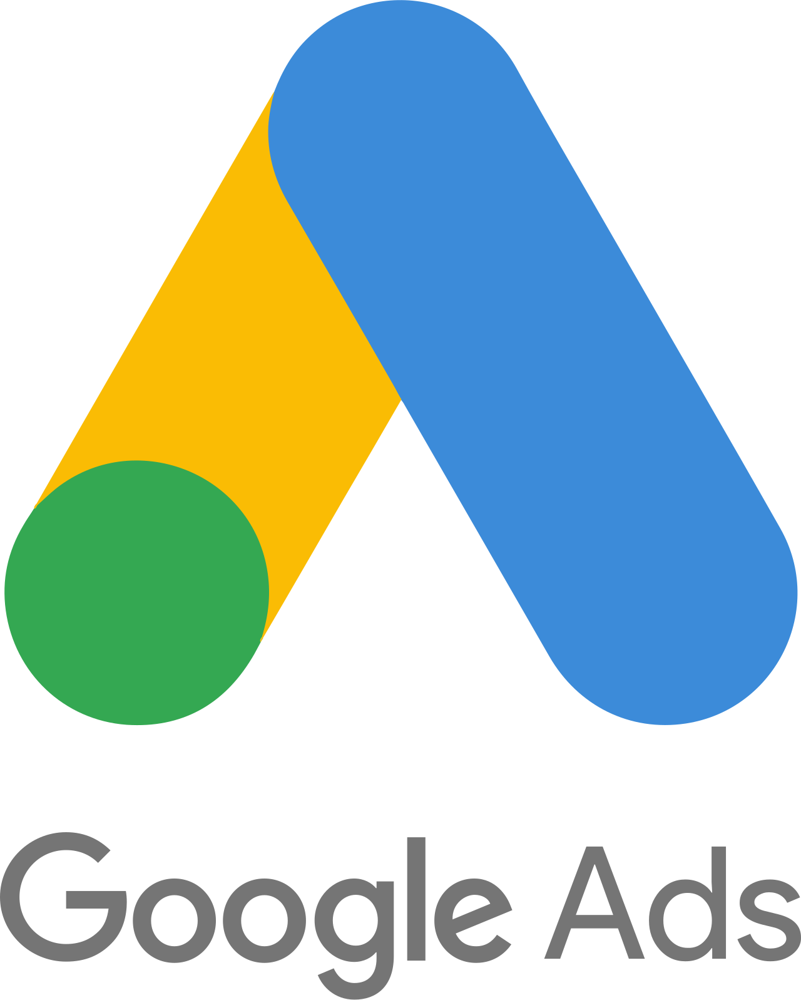
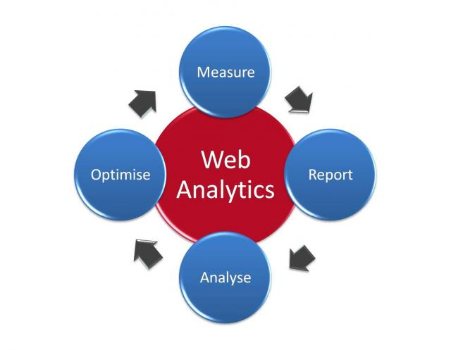
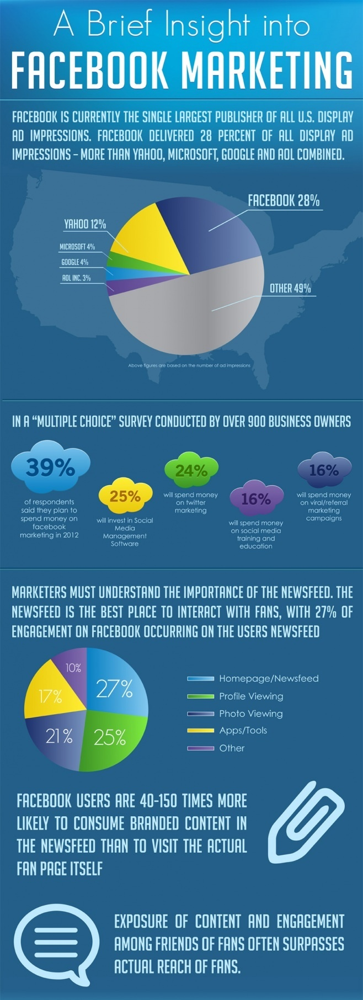
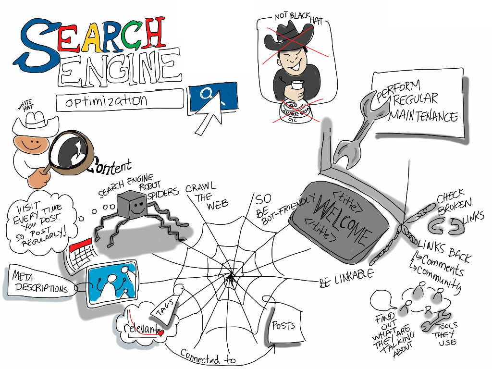

Digital Marketing (OEL-220C)
Complete SPPU 2024-Pattern Exam Study Guide: Simple Explanations, Formal Definitions, Solved Numericals, Code Snippets & Model Answers
Unit 1: Fundamentals of Digital Marketing, Landscape & Strategic Planning
Digital marketing is how modern businesses reach customers on phones, laptops, search engines, and social apps. Unlike old-school billboards or newspaper ads, every click, view, and purchase online can be measured in real time.
1.1 Core Concepts & POEM Media Framework
In Simple Words: Instead of putting up a poster on a highway where you don't know who looked at it, digital marketing puts your message right inside the apps and search results people already use, and tells you exactly how many people clicked and bought.
In Simple Words: Owned is your own house (your website/app), Paid is renting a billboard (Google/Meta Ads), and Earned is your friends recommending your restaurant for free.
| Media Type | Control | Cost | Real-World Examples | Primary Role |
|---|---|---|---|---|
| Paid Media | Medium (Platform rules apply) | Direct ad spend (CPC/CPM) | Google Search Ads, Instagram Sponsored Reels, YouTube Pre-Roll | Fast traffic, scaling reach, retargeting |
| Owned Media | 100% Brand Controlled | Development & maintenance | Company Website, Blog, Mobile App, Email Subscriber List | Long-term asset, brand hub, conversion |
| Earned Media | Zero Direct Control | Rs. 0 (Organic) | Google Reviews, Viral Shares, Influencer Mentions, Backlinks | High trust, social proof, SEO authority |
1.2 Traditional Marketing vs. Digital Marketing
Examiners frequently ask for a structured comparison between traditional (offline) and digital (online) marketing. Focus on measurability, targeting, cost, and communication flow.
| Dimension | Traditional Marketing | Digital Marketing |
|---|---|---|
| Channels | TV, Radio, Print (Newspapers), Billboards, Flyers | Search Engines, Social Media, Email, Websites, OTT |
| Communication | One-way broadcast (Brand → Audience) | Two-way interactive (Comments, DMs, Reviews) |
| Targeting | Broad geographic/demographic guesses | Hyper-granular (Age, city, interests, search intent) |
| ROI Tracking | Difficult; relies on surveys and estimates | Exact real-time tracking (CTR, CPA, ROAS via Pixels/GA4) |
| Budget & Agility | High minimum cost; cannot edit once printed | Start with Rs. 100/day; pause or edit ads in seconds |
1.3 The Indian Digital Ecosystem
India's digital growth is driven by mobile-first adoption, ultra-cheap 4G/5G data, and Digital Public Infrastructure (DPI):
- Jio Effect & Mobile-First Users: Over 800M+ internet users in India access the web primarily on budget Android smartphones, making mobile-responsive design and lightweight pages mandatory.
- UPI (Unified Payments Interface): Zero-friction instant checkout has slashed cart abandonment for e-commerce and D2C brands.
- Vernacular & Voice Content: Tier-2 and Tier-3 audiences prefer Hindi, Marathi, Tamil, and regional video/voice search over English text.
- ONDC (Open Network for Digital Commerce): Unbundles discovery from delivery, allowing small local Kirana stores to compete digitally without high marketplace commissions.
1.4 Digital Marketing Funnel & RACE Strategic Framework

In Simple Words: First get strangers to notice you (Reach), make them click or sign up (Act), turn them into paying buyers (Convert), and keep them coming back so they tell others (Engage).
- Buyer Persona: Semi-fictional profile of an ideal customer built from demographics, pain points, goals, and buying triggers (e.g., "Rohan, 20, Pune B.Tech student, searches reviews on YouTube before buying Rs. 50k laptops").
- Lauterborn's 4Cs (Customer-Centric Digital 4Ps): Product → Customer Solution, Price → Cost, Place → Convenience (UPI/10-min delivery), Promotion → Communication (two-way dialogue).
- Google's ZMOT: The pre-purchase online research phase (reading reviews, comparing specs, watching reels) triggered immediately after seeing a Stimulus, before visiting a store or checkout (FMOT).
1.5 Code Examples: Semantic Landing Page & UTM Campaign Link Builder
In Unit 1 practicals and exams, you should know how to build a clean landing page with Open Graph tags (for social sharing) and how to tag campaign URLs using UTM parameters so analytics tools know which channel sent the traffic.
<!DOCTYPE html>
<html lang="en">
<head>
<meta charset="UTF-8">
<meta name="viewport" content="width=device-width, initial-scale=1.0">
<title>SPPU Exam Prep Bootcamp | Enroll Today</title>
<!-- Open Graph Tags for WhatsApp / LinkedIn / Facebook Previews -->
<meta property="og:title" content="Master SE Computer Subjects in 30 Days">
<meta property="og:description" content="Live doubt solving, solved SPPU papers, and cheat sheets.">
<meta property="og:type" content="website">
<meta property="og:url" content="https://example.edu.in/sppu-bootcamp">
</head>
<body>
<main>
<h1>Crack Your SPPU 2024 Pattern Exams</h1>
<p>Join 5,000+ engineering students learning with visual study guides.</p>
<form action="/register" method="POST">
<input type="email" name="email" placeholder="Enter your college email" required>
<button type="submit">Download Free Syllabus Pack</button>
</form>
</main>
</body>
</html># Python: UTM Parameter Builder for RACE Campaign Tracking
from urllib.parse import urlencode
def build_utm_url(base_url, source, medium, campaign, content=None):
params = {
"utm_source": source, # e.g., 'instagram', 'google', 'newsletter'
"utm_medium": medium, # e.g., 'cpc', 'social', 'email'
"utm_campaign": campaign, # e.g., 'sppu_exam_2026'
}
if content:
params["utm_content"] = content
return f"{base_url}?{urlencode(params)}"
url = build_utm_url(
"https://example.edu.in/sppu-bootcamp",
source="instagram",
medium="paid_social",
campaign="diwali_sale",
content="reels_video_1"
)
print("Trackable Campaign URL:", url)1.6 Important SPPU Exam Questions & Model Answers (Unit 1)
Model Answer Points (1.5 Marks per stage):
- Reach (1.5M): Objective is brand awareness and driving traffic to owned properties using SEO, PPC, and Social Ads. KPIs: Unique visitors, Impressions, Organic reach.
- Act / Interact (1.5M): Objective is encouraging visitors to take the next step (read a blog, watch a demo, subscribe). KPIs: Click-Through Rate (CTR), Bounce Rate, Leads generated.
- Convert (1.5M): Objective is turning leads into paying customers via optimized landing pages and UPI/card checkout. KPIs: Conversion Rate (CR), Cost Per Acquisition (CPA), ROAS.
- Engage (1.5M): Objective is post-purchase retention, repeat sales, and referrals via email drips and loyalty programs. KPIs: Repeat purchase rate, Customer Lifetime Value (LTV), Net Promoter Score (NPS).
Model Answer Points:
- Paid Media (1.5M): Channels where brands pay for visibility (Google Search Ads, Meta Sponsored Posts). Fast reach, stops when budget stops.
- Owned Media (1.5M): Digital assets fully controlled by the brand (Website, Blog, Email list, Mobile App). Builds long-term equity.
- Earned Media (1M): Organic publicity gained through customer trust (Reviews, Shares, Backlinks, Word-of-mouth). Highest credibility, lowest cost.
Unit 1 Short Notes & High-Yield Cheat Sheet
POEM Media, Traditional vs Digital, Indian DPI Drivers, ZMOT, and the 4-Stage RACE Matrix.
◆ POEM Media Framework
- Paid: Sponsored reach (Google/Meta Ads) — fast scale, stops when budget ends.
- Owned: Brand assets (Website, App, Email list) — 100% control, long-term equity.
- Earned: Organic proof (Reviews, PR, Shares, Backlinks) — zero ad cost, highest trust.
◆ RACE Planning Model (Dave Chaffey)
- Reach: Discovery via SEO/Ads (KPIs: Impressions, Traffic).
- Act: Interaction/Leads (KPIs: CTR, Bounce Rate, Leads).
- Convert: Sale via UPI/Checkout (KPIs: CR, CPA, ROAS).
- Engage: Repeat advocacy (KPIs: LTV, Retention, NPS).
◆ India Ecosystem & ZMOT
- 4 Pillars: Affordable 4G/5G (Jio effect), UPI instant checkout, Vernacular/Voice search, ONDC open commerce.
- ZMOT: Pre-checkout online comparison & review reading after initial Stimulus.
- UTM Tracking:
utm_source,utm_medium,utm_campaignattribute traffic accurately.
Unit 2: Quantitative Metrics, Paid Search (PPC), Analytics & Email/Programmatic Channels
Digital marketing is heavily data-driven. In SPPU exams, Unit 2 is the primary source of numerical problems (calculating CTR, CPC, CPA, ROAS, CAC) and Google Ads Vickrey Auction questions.
2.1 Essential Digital Marketing KPI Formulas & Solved Numericals
- Click-Through Rate (CTR): $\text{CTR (\%)} = \left(\frac{\text{Total Clicks}}{\text{Total Impressions}}\right) \times 100$
- Cost Per Click (CPC): $\text{CPC} = \frac{\text{Total Ad Spend}}{\text{Total Clicks}}$
- Cost Per Mille (CPM - per 1,000 impressions): $\text{CPM} = \left(\frac{\text{Total Ad Spend}}{\text{Total Impressions}}\right) \times 1000$
- Conversion Rate (CR): $\text{CR (\%)} = \left(\frac{\text{Total Conversions}}{\text{Total Clicks}}\right) \times 100$
- Cost Per Acquisition (CPA): $\text{CPA} = \frac{\text{Total Ad Spend}}{\text{Total Conversions}}$
- Return on Ad Spend (ROAS): $\text{ROAS} = \frac{\text{Revenue from Ads}}{\text{Total Ad Spend}}$
- Customer Acquisition Cost (CAC): $\text{CAC} = \frac{\text{Total Marketing Spend} + \text{Sales Spend}}{\text{New Customers Acquired}}$
- Customer Lifetime Value (LTV): $\text{LTV} = \text{Avg. Order Value (AOV)} \times \text{Purchase Frequency/Year} \times \text{Retention Lifespan (Years)} \times \text{Gross Margin}$
- Healthy Benchmark: $\text{LTV} : \text{CAC} \ge 3 : 1$. A ratio $< 1:1$ means losing money on every customer; $> 5:1$ signals under-investing in growth.
- Quick Numerical: If an SaaS app charges Rs. 500/month with 80% margin and 15-month average retention, $\text{LTV} = 500 \times 15 \times 0.80 = \text{Rs. } 6,000$. If $\text{CAC} = \text{Rs. } 1,500$, ratio $= 6000 / 1500 = \mathbf{4 : 1}$ (Healthy).
Problem: An EdTech startup runs a Google Search campaign with a budget of Rs. 25,000. The ad receives 50,000 impressions and 2,000 clicks. Out of those visitors, 80 students purchase a course priced at Rs. 1,500 each. Calculate: (a) CTR, (b) CPC, (c) CPM, (d) Conversion Rate, (e) CPA, and (f) ROAS.
Step-by-Step Solution:
- CTR: $\text{CTR} = \frac{2,000}{50,000} \times 100 = 4.0\%$
- CPC: $\text{CPC} = \frac{25,000}{2,000} = \text{Rs. } 12.50$
- CPM: $\text{CPM} = \frac{25,000}{50,000} \times 1000 = \text{Rs. } 500$
- Conversion Rate (CR): $\text{CR} = \frac{80}{2,000} \times 100 = 4.0\%$
- CPA: $\text{CPA} = \frac{25,000}{80} = \text{Rs. } 312.50$
- Total Revenue & ROAS: $\text{Revenue} = 80 \times 1,500 = \text{Rs. } 1,20,000$. Therefore, $\text{ROAS} = \frac{1,20,000}{25,000} = 4.8\text{x}$ (or $480\%$).
2.2 Google Ads & Vickrey Second-Price Auction

In Simple Words: You don't win the #1 spot on Google just by throwing the most money. If your ad and landing page are super helpful (high Quality Score), you can beat a richer competitor and pay less per click!
- $\text{Ad Rank} = \text{Max CPC Bid} \times \text{Quality Score}$
- $\text{Actual CPC Paid} = \frac{\text{Ad Rank of Competitor Below You}}{\text{Your Quality Score}} + \text{Rs. } 0.01$ (or USD 0.01)
Problem: Three advertisers bid on the keyword "Cloud Hosting". Compute their Ad Rank, Ad Position, and Actual CPC paid by each.
| Advertiser | Max CPC Bid | Quality Score (QS) | Ad Rank ($\text{Bid} \times \text{QS}$) | Final Position | Actual CPC Paid |
|---|---|---|---|---|---|
| Advertiser A | Rs. 20 | 9 | $20 \times 9 = \mathbf{180}$ | #1 | $(160 / 9) + 0.01 = \mathbf{Rs.\ 17.79}$ |
| Advertiser B | Rs. 40 | 4 | $40 \times 4 = \mathbf{160}$ | #2 | $(100 / 4) + 0.01 = \mathbf{Rs.\ 25.01}$ |
| Advertiser C | Rs. 50 | 2 | $50 \times 2 = \mathbf{100}$ | #3 | Pays minimum reserve floor |
Key Takeaway: Advertiser A bids half as much as B (Rs. 20 vs Rs. 40) yet wins Position #1 and pays only Rs. 17.79 per click because of a superior Quality Score (9 vs 4).
2.3 Web Analytics: Google Analytics 4 (GA4) vs. Google Search Console (GSC)

| Feature | Google Analytics 4 (GA4) | Google Search Console (GSC) |
|---|---|---|
| Primary Focus | What users do on your website (Post-click behavior) | How your site performs on Google Search (Pre-click) |
| Data Model | Event-based (page_view, scroll, purchase) |
Search queries, Impressions, Clicks, Average Position |
| Traffic Scope | All channels (Organic, Paid, Social, Direct, Email) | Google Organic Search only |
| Technical Diagnostics | Conversion funnels, Engagement rate, LTV | Indexing errors, Sitemaps, Core Web Vitals |
| Attribution Model | How Credit is Assigned to Touchpoints | Best Use Case |
|---|---|---|
| Last-Click | 100% credit to the final touchpoint before conversion. | Measuring bottom-of-funnel converters (Branded Search). |
| First-Click | 100% credit to the very first discovery channel. | Evaluating top-of-funnel awareness channels (Reels/PR). |
| Linear | Equal credit split evenly across all touchpoints (25% each for 4 clicks). | Full-funnel visibility in multi-day consideration journeys. |
| Time-Decay | More credit to interactions closer in time to conversion. | Short promotional sales cycles (festive flash sales). |
| Data-Driven (GA4 Default) | Shapley-value ML distributes credit dynamically based on incremental lift. | Enterprise multi-channel optimization (requires high volume). |
2.4 Email Drip Campaigns & Programmatic Advertising (RTB)
In Simple Words: Like a helpful salesperson who sends a welcome note on Day 1, a guide on Day 3, and a discount reminder on Day 7 automatically without manual effort.
In Simple Words: Every time you open a news website, an invisible lightning-fast auction happens in 0.1 seconds to decide which ad banner you see!
2.5 Code Examples: GA4 Event Tracking & Python Auction Simulator
<!-- Google Analytics 4 (GA4) Global Site Tag + Custom Conversion Event -->
<script async src="https://www.googletagmanager.com/gtag/js?id=G-XXXXXXXXXX"></script>
<script>
window.dataLayer = window.dataLayer || [];
function gtag(){dataLayer.push(arguments);}
gtag('js', new Date());
gtag('config', 'G-XXXXXXXXXX');
// Track custom 'generate_lead' event when a student submits the form
function trackLead(courseName) {
gtag('event', 'generate_lead', {
'currency': 'INR',
'value': 1500.00,
'course_name': courseName
});
}
</script># Python: Digital Marketing KPI & Vickrey Auction Calculator
def calculate_kpis(spend, impressions, clicks, conversions, revenue):
ctr = (clicks / impressions) * 100
cpc = spend / clicks
cpm = (spend / impressions) * 1000
cr = (conversions / clicks) * 100
cpa = spend / conversions
roas = revenue / spend
return {"CTR%": round(ctr, 2), "CPC": round(cpc, 2), "CPM": round(cpm, 2),
"CR%": round(cr, 2), "CPA": round(cpa, 2), "ROAS": round(roas, 2)}
def vickrey_auction(bidders):
# bidders: list of (name, max_cpc, quality_score)
ranked = sorted(
[(n, bid, qs, bid * qs) for n, bid, qs in bidders],
key=lambda x: x[3], reverse=True
)
results = []
for i, (name, bid, qs, ad_rank) in enumerate(ranked):
if i + 1 < len(ranked):
next_rank = ranked[i + 1][3]
actual_cpc = round((next_rank / qs) + 0.01, 2)
else:
actual_cpc = "Reserve Floor"
results.append((i + 1, name, ad_rank, actual_cpc))
return results
print("KPIs:", calculate_kpis(25000, 50000, 2000, 80, 120000))
print("Auction:", vickrey_auction([("A", 20, 9), ("B", 40, 4), ("C", 50, 2)]))2.6 Important SPPU Exam Questions & Model Answers (Unit 2)
- Ad Rank Formula (2M): $\text{Ad Rank} = \text{Max CPC Bid} \times \text{Quality Score}$.
- Quality Score Components (2M): (1) Expected Click-Through Rate (CTR), (2) Ad Relevance to keyword, (3) Landing Page Experience & speed.
- Second-Price Mechanism (2M): Winner pays $\frac{\text{Next Competitor's Ad Rank}}{\text{Winner's QS}} + 0.01$, rewarding relevant ads with lower CPCs.
Unit 2 Short Notes & High-Yield Cheat Sheet
Performance KPIs, Vickrey Auction Formulas, GA4 vs GSC, Attribution, and Programmatic RTB.
◆ Essential KPI Equations
Target LTV:CAC ≥ 3:1. Remember: ROAS measures gross ad revenue return; ROI measures net profit return after product COGS.
◆ Vickrey Second-Price Auction
- Ad Rank: $\text{Max CPC Bid} \times \text{Quality Score (1–10)}$
- Actual CPC: $(\text{Competitor Below's Ad Rank} / \text{Your QS}) + 0.01$
- 3 QS Factors: Expected CTR, Ad Relevance, Landing Page Experience.
◆ GA4, GSC & Programmatic RTB
- GA4 vs GSC: GA4 = post-click on-site events (all channels); GSC = pre-click organic Search impressions & indexing.
- RTB Stack: Publisher SSP → Ad Exchange (<100ms auction) → Advertiser DSP.
- Email Drips: Triggered automated sequences (welcome, cart recovery, re-engagement).
Unit 3: Social Media Marketing (SMM) & Content Strategy
Social Media Marketing (SMM) uses platforms like Instagram, Facebook, LinkedIn, and X (Twitter) to build communities, drive traffic, and generate leads. Unlike search ads (where users actively look for a product), social ads interrupt users based on their interests and behaviors.
3.1 SMM Principles & Platform Matrix

| Platform | Primary Audience | Best Content Formats | Primary Marketing Goal |
|---|---|---|---|
| Gen Z & Millennials (18–34) | Reels, Stories, Carousels | Brand Discovery, D2C Sales, Influencer Collabs | |
| Professionals, Decision Makers | Thought-leadership posts, PDF Carousels, InMail | B2B Lead Gen, SaaS, Recruitment, ABM | |
| Facebook (Meta) | Broad Demographics (25–55+) | Video Ads, Groups, Marketplace | Retargeting, Local Businesses, Mass Reach |
| X (Twitter) | News, Tech, Finance, Creators | Threads, Real-time commentary, Polls | PR, Customer Support, Trendjacking |
3.2 Meta Ads 3-Tier Hierarchy & Audience Segmentation
In Simple Words: Think of a Campaign as the goal ("Sell Shoes"), the Ad Set as who sees it ("Men 18–30 in Pune, Rs. 500/day"), and the Ad as the actual poster or video reel they see.
- Core Audiences: Built from Meta's native data (Age, Gender, City, Interests, Behaviors). Best for Top-of-Funnel (Reach).
- Custom Audiences: Warm audiences who already interacted with you (Website visitors tracked via Meta Pixel, App users, Email lists, Instagram engagers). Best for Retargeting (Convert).
- Lookalike Audiences (LAL): Meta's AI finds new people whose profiles closely match your best existing buyers (e.g., Top 1% Lookalike of Purchasers in India).
Server-Side Tracking (Meta Conversions API / CAPI): With iOS ATT and browser third-party cookie restrictions blocking client-side pixels, modern campaigns pair the browser Meta Pixel with Conversions API (CAPI) (server-to-server events deduplicated by event_id) to preserve attribution accuracy.
3.3 LinkedIn B2B Marketing & Account-Based Marketing (ABM)
In Simple Words: Instead of casting a wide net to catch any fish, ABM uses a spear to target the exact 50 companies (e.g., CTOs at Infosys, TCS, Wipro) you want as enterprise clients.
Key LinkedIn B2B tools include Matched Audiences (uploading target company lists), Sponsored InMail / Message Ads, and Native Lead Gen Forms (auto-filling the user's name, email, and job title with 1 click).
3.4 Instagram Reels Algorithm & Influencer Tiers
Instagram's Reels algorithm ranks short-form videos using four primary signals: Watch Time / Completion Rate (did users replay it?), Shares/Sends via DM (strongest viral signal), Saves, and Comments.
| Influencer Tier | Follower Count | Engagement Rate | Best Use Case |
|---|---|---|---|
| Nano | 1K – 10K | Highest (5%–10%) | Hyper-local trust, niche reviews, low budget |
| Micro | 10K – 100K | High (3%–5%) | Best ROI for D2C brands, tech/edu niches |
| Macro | 100K – 1M | Moderate (1.5%–3%) | Product launches, broad category awareness |
| Mega / Celeb | 1M+ | Lowest (<1.5%) | Mass brand recall, festive campaigns |
3.5 Content Marketing: Pillars & The 80/20 Rule
3.6 Code Examples: Meta Pixel Event Tracking & 80/20 Content Calendar Validator
<!-- Meta (Facebook) Pixel Base Code + Purchase Event -->
<script>
!function(f,b,e,v,n,t,s){if(f.fbq)return;n=f.fbq=function(){n.callMethod?
n.callMethod.apply(n,arguments):n.queue.push(arguments)};if(!f._fbq)f._fbq=n;
n.push=n;n.loaded=!0;n.version='2.0';n.queue=[];t=b.createElement(e);t.async=!0;
t.src=v;s=b.getElementsByTagName(e)[0];s.parentNode.insertBefore(t,s)}(window,
document,'script','https://connect.facebook.net/en_US/fbevents.js');
fbq('init', '123456789012345');
fbq('track', 'PageView');
// Triggered on Order Confirmation Page
fbq('track', 'Purchase', { value: 1499.00, currency: 'INR' });
</script># Python: Content Calendar 80/20 Rule Analyzer
calendar = [
("Mon", "Educational Carousel: 5 SEO Tips", "value"),
("Tue", "Behind-the-Scenes Reel", "value"),
("Wed", "Student Success Case Study", "value"),
("Thu", "50% Off Bootcamp Promo", "promo"),
("Fri", "Interactive Poll + Meme", "value"),
]
total = len(calendar)
value_posts = sum(1 for _, _, kind in calendar if kind == "value")
promo_posts = total - value_posts
print(f"Value Ratio: {value_posts/total:.0%} | Promo Ratio: {promo_posts/total:.0%}")3.7 Important SPPU Exam Questions & Model Answers (Unit 3)
- Core Audiences (2M): Targeted using demographics, location (e.g., Pune), and interests ("Coding"). Used for cold prospecting.
- Custom Audiences (2M): Retargeting people who already engaged (website visitors via Meta Pixel, cart abandoners, video viewers).
- Lookalike Audiences (2M): Algorithmically generated cold audience sharing traits with a high-value Custom Audience seed (e.g., 1% Lookalike of past buyers).
Unit 3 Short Notes & High-Yield Cheat Sheet
Platform Matrix, Meta 3-Tier Campaign Structure, Audience Types, LinkedIn ABM, and Content Strategy.
◆ Meta Ads 3-Tier & Audiences
- 3 Levels: Campaign (Objective) → Ad Set (Targeting, Budget, Placements) → Ad (Creative & CTA).
- Core: Cold demographics & interests.
- Custom: Warm retargeting via Pixel / CAPI / email list.
- Lookalike (LAL): AI-cloned cold audience resembling top 1%–5% past buyers.
◆ LinkedIn ABM & Platform Fit
- LinkedIn ABM: Account-Based Marketing targeting named enterprise companies + Matched Audiences + 1-click Lead Gen Forms.
- Instagram: Reels completion rate & DM shares drive organic virality.
- X (Twitter): Real-time PR, tech threads, crisis support.
◆ Influencers & 80/20 Rule
- 80/20 Content Rule: 80% educational/entertaining value posts, 20% direct promotional pitches.
- Influencer Sweet Spot: Micro-influencers (10K–100K) yield the highest conversion ROI (3%–5% engagement) for D2C brands compared to celebrity sponsorships.
Unit 4: Search Engine Optimization (SEO) & Emerging Channels
Search Engine Optimization (SEO) is the practice of improving a website so it ranks higher in organic (unpaid) search results on Google or Bing, bringing free, high-intent traffic.
4.1 Search Engine Architecture: Crawling, Indexing & Ranking

- E-E-A-T (Search Quality Rater Guidelines): Experience (first-hand usage), Expertise (credentials/depth), Authoritativeness (citations/backlinks), and Trustworthiness (HTTPS, accurate authorship, transparent policies — vital for YMYL medical/finance pages).
- Privacy-First / First-Party Data: Under India's Digital Personal Data Protection (DPDP) Act 2023 and third-party cookie deprecation, brands must obtain explicit consent before tracking, offer clear opt-outs, and rely on zero/first-party CRM data + Server-Side tagging.
4.2 On-Page SEO & Structured Data (JSON-LD Schema)
In Simple Words: Making sure both human readers and Googlebot can immediately tell what your page is about from its title, headings, and clear structure.
4.3 Off-Page SEO & Link Equity
In Simple Words: Backlinks are like academic citations. When a trusted site like Wikipedia or IIT links to your blog, Google treats your site as more credible.
- Dofollow vs. Nofollow:
dofollowlinks pass PageRank/link equity;rel="nofollow"orrel="sponsored"tells Google not to pass ranking credit (used for paid ads/comments). - White-Hat vs. Black-Hat SEO: White-hat builds genuine content, guest posts, and PR. Black-hat (keyword stuffing, cloaking, buying spammy links) violates Google guidelines and leads to manual penalties.
4.4 Technical SEO: Core Web Vitals, robots.txt & Sitemaps
- LCP (Largest Contentful Paint): Loading performance — main content should load in ≤ 2.5 seconds.
- INP (Interaction to Next Paint): Responsiveness — page should respond to clicks in ≤ 200 milliseconds.
- CLS (Cumulative Layout Shift): Visual stability — elements shouldn't jump around while loading (score ≤ 0.1).
robots.txtvs. XML Sitemap:robots.txttells crawlers which folders not to crawl (e.g.,/admin/);sitemap.xmllists all important URLs you want indexed.- Canonical Tag (
rel="canonical"): Prevents duplicate content penalties by pointing Google to the master URL.
4.5 Keyword Research & Search Intent
| Search Intent | User Mindset | Example Query |
|---|---|---|
| Informational | Wants to learn | "what is RACE framework in digital marketing" |
| Navigational | Looking for a specific site | "SPPU student login portal" |
| Commercial | Comparing options before buying | "best budget laptop for engineering students 2026" |
| Transactional | Ready to buy right now | "buy HP Victus laptop online India" |
4.6 Video/OTT Marketing (YouTube), Voice Search & ORM
- YouTube Partner Program (YPP) & Ad Formats: Creators monetize via AdSense once eligible (1,000 subscribers + 4,000 watch hours or 10M Shorts views). Ad formats include Skippable In-Stream (TrueView) (skip after 5s; advertiser pays if watched 30s or clicked), Non-Skippable (15s), and Bumper Ads (6s non-skippable).
- Voice Search & Zero-Click Searches: Conversational queries ("Hey Google, best engineering college near me") favor FAQ-style headings and Featured Snippets (Position 0), where users get answers directly on the SERP without clicking.
- ORM (Online Reputation Management): Monitoring and influencing public perception of a brand via Google Reviews, social listening, and rapid, polite resolution of negative feedback.
4.7 Code Examples: On-Page SEO Head, JSON-LD Schema & robots.txt
<head>
<title>Best Python Course in Pune | SPPU Certified Bootcamp</title>
<meta name="description" content="Learn Python from scratch with live projects and SPPU exam prep. Enroll now!">
<link rel="canonical" href="https://example.edu.in/courses/python-pune">
<!-- JSON-LD Structured Data for Google Rich Snippets -->
<script type="application/ld+json">
{
"@context": "https://schema.org",
"@type": "Course",
"name": "Python & Data Structures Bootcamp",
"provider": {
"@type": "Organization",
"name": "Pune Tech Academy",
"sameAs": "https://example.edu.in"
}
}
</script>
</head># robots.txt (Placed at root: https://example.edu.in/robots.txt)
User-agent: *
Disallow: /admin/
Disallow: /cart/
Allow: /
Sitemap: https://example.edu.in/sitemap.xml4.8 Important SPPU Exam Questions & Model Answers (Unit 4)
- On-Page SEO (2M): Content and HTML optimization on the page itself (Title tags, Meta descriptions, H1-H6 headings, Keyword placement, Alt text).
- Off-Page SEO (2M): External authority building (High-DA Backlinks, Guest Blogging, Digital PR, Social signals).
- Technical SEO (2M): Backend infrastructure for crawling and speed (Core Web Vitals: LCP/INP/CLS,
robots.txt, XML Sitemaps, HTTPS, Canonical tags).
Unit 4 Short Notes & High-Yield Cheat Sheet
Search Pipeline, On-Page/Off-Page/Technical SEO, Core Web Vitals, Search Intent, YouTube Ads, and ORM.
◆ Search Pipeline & 3 Pillars of SEO
- Pipeline: Crawling (Googlebot +
sitemap.xml) → Indexing (parsed DB) → Ranking (E-E-A-T, links, UX). - On-Page: Title (50–60c), Meta Desc (150–160c), H1–H6, Alt text, JSON-LD Schema.
- Off-Page: High-DA
dofollowbacklinks (Link Equity) & PR. - Technical:
robots.txt,rel="canonical", HTTPS, mobile readiness.
◆ Core Web Vitals & Intent
- LCP ≤ 2.5s (loading) • INP ≤ 200ms (interactivity) • CLS ≤ 0.1 (stability).
- 4 Search Intents: Informational ("what is") • Navigational ("login") • Commercial ("best laptop 2026") • Transactional ("buy now").
◆ Video, Voice & ORM
- YouTube YPP: 1K subs + 4K watch hrs (or 10M Shorts views). Formats: TrueView (5s skip, pay @ 30s), Non-Skippable (15s), Bumper (6s recall).
- Voice / Position 0: FAQ headings win Featured Snippets & Zero-Click answers.
- ORM & Privacy: Rapid review resolution + explicit consent under DPDP Act 2023.
Solved SPPU Model End-Semester Paper (OEL-220C — 30 Marks)
Time: 1 Hour 15 Minutes | Pattern: NEP 2024 Open Elective I | All questions carry step-by-step marking schemes.
Solution: Using Zomato as an example: (1) Paid Media: YouTube/Instagram ads during IPL. (2) Owned Media: Zomato App & push notifications. (3) Earned Media: Viral memes shared by users. Across RACE: Reach (social ads), Act (app install & menu browse), Convert (UPI food order), Engage (Zomato Gold renewal & ratings).
- $\text{CTR} = (2,500 / 1,00,000) \times 100 = \mathbf{2.5\%}$
- $\text{CPC} = 40,000 / 2,500 = \mathbf{Rs.\ 16.00}$
- $\text{CR} = (50 / 2,500) \times 100 = \mathbf{2.0\%}$
- $\text{CPA} = 40,000 / 50 = \mathbf{Rs.\ 800.00}$
- $\text{Revenue} = 50 \times 3,000 = \text{Rs.\ } 1,50,000 \implies \text{ROAS} = 1,50,000 / 40,000 = \mathbf{3.75\text{x}}$
Solution: Google's Core Web Vitals measure real-world UX: LCP ≤ 2.5s (loading speed), INP ≤ 200ms (interactivity), and CLS ≤ 0.1 (layout stability). robots.txt blocks crawlers from private/duplicate paths, whereas sitemap.xml provides an explicit roadmap of indexable URLs.
Solution: GA4 tracks post-click user events across all traffic sources; GSC tracks pre-click Google Search impressions, queries, and indexing health. On YouTube, TrueView Skippable Ads let viewers skip after 5 seconds (advertiser pays at 30s/completion), while Bumper Ads are 6-second non-skippable bursts ideal for high-frequency brand recall.
Digital Marketing Master Flashcards (25 High-Yield Cards)
Tap any card to flip and test your mastery of POEM, RACE, KPI formulas, Vickrey auctions, Meta Ads, and SEO.
Owned: 100% brand-controlled properties (Website, App, Email list).
Earned: Organic word-of-mouth (Reviews, PR, viral shares, backlinks).
Mandatory UTMs:
utm_source (origin), utm_medium (channel type), utm_campaign (campaign name).$\text{CPM} = \frac{\text{Ad Spend}}{\text{Impressions}} \times 1000$
$\text{CPA} = \frac{\text{Ad Spend}}{\text{Total Conversions}}$
Total Cost: $10\text{k} + 25\text{k} = 35\text{k}$; Net Gain $= 40\text{k} - 35\text{k} = 5\text{k}$.
ROI: $(5,000 / 35,000) \times 100 = \mathbf{14.29\%}$.
$\text{Actual CPC} = \frac{\text{Next Competitor's Ad Rank}}{\text{Your Quality Score}} + 0.01$.
A higher Quality Score lets you pay less than a higher bidder!
2. Ad Relevance (match between keyword & ad copy)
3. Landing Page Experience (relevance, speed, mobile usability).
page_view, purchase).GSC: Tracks pre-click Google Organic Search queries, impressions, indexing, and Core Web Vitals.
CAC = (Total Marketing Spend + Sales Team/Ops Spend) / New Customers Acquired in that period.
DSP (Demand-Side): Advertisers bid programmatically using audience rules.
Ad Exchange: Marketplace hosting the <100 ms auction linking SSP and DSP.
2. Ad Set: Audience targeting, daily/lifetime budget, schedule, placements.
3. Ad: Visual creative (Reel/Carousel), copy, and CTA button.
Custom: Warm retargeting (Pixel site visitors, CRM emails).
Lookalike: AI-generated cold users mimicking top 1% of a high-value Custom seed list.
Tools: Matched Audiences (upload target company domains) + Native Lead Gen Forms (1-click auto-fill).
2. DM Shares / Sends (strongest reach multiplier)
3. Saves
4. Comments & Likes.
Best ROI Tier: Micro-influencers (10K–100K followers) combine niche trust with high engagement (3%–5%) at low cost.
event_id) to stabilize ROAS measurement and AI bidding.sitemap.xml.2. Indexing: Renders HTML/JS, extracts text/JSON-LD, stores in inverted index.
3. Ranking: Sorts results by intent relevance, E-E-A-T, backlinks, and Core Web Vitals.
Off-Page: High-authority
dofollow backlinks & Digital PR.Technical:
robots.txt, XML Sitemap, canonical tags, Core Web Vitals, HTTPS.2. INP (Interaction to Next Paint — responsiveness): ≤ 200 ms.
3. CLS (Cumulative Layout Shift — stability): ≤ 0.1.
robots.txt vs sitemap.xml vs rel="canonical"./admin/).sitemap.xml: Lists canonical indexable URLs for discovery.
rel="canonical": Merges duplicate URL variations so ranking equity is not split.
4 Search Intents: Informational, Navigational, Commercial Investigation, Transactional.
Non-Skippable: 15s mandatory (CPM billing).
Bumper: 6s unskippable micro-ad ideal for mobile brand recall.
DPDP Act 2023: Requires explicit informed user consent before collecting personal tracking data and easy opt-out.
References, Syllabus Books & Image Attributions
1. Official SPPU 2024 Pattern & Standard Digital Marketing Textbooks
- Savitribai Phule Pune University (SPPU): SE Computer Science & Engineering 2024 Pattern (Revised) — Open Elective I: Digital Marketing (OEL-220C).
- Chaffey, Dave & Ellis-Chadwick, Fiona: Digital Marketing: Strategy, Implementation and Practice, 8th Edition, Pearson. (Primary reference for RACE & POEM frameworks).
- Kotler, Philip, Kartajaya, Hermawan & Setiawan, Iwan: Marketing 5.0: Technology for Humanity, Wiley.
- Gupta, Seema: Digital Marketing, 3rd Edition, McGraw Hill Education India.
2. MOOC, NPTEL & Official Certification Links
- NPTEL / SWAYAM: Marketing Management / Digital Marketing courses by IIT Professors (https://onlinecourses.nptel.ac.in/).
- Google Skillshop: Google Ads Search & Google Analytics 4 (GA4) Certification (https://skillshop.withgoogle.com/).
- HubSpot Academy: Inbound & Content Marketing Certification (https://academy.hubspot.com/).
3. Wikimedia Commons Image Attributions (manifest.json)
| Local File | Title | Author / Artist | License | Wikimedia Commons Source |
|---|---|---|---|---|
digital_marketing_funnel.png |
Sales-funnel.svg | Tavin | CC0 | Wikimedia Commons |
seo_diagram.png |
Demystifying Search Engine Optimization -viz notes- -wcyvr (8084222814).jpg | Giulia Forsythe | CC0 | Wikimedia Commons |
ppc_google_ads.png |
Kajola-Kristada + PPC logo.jpg | Kajola-Kristada Ltd., PPC Broadband, Inc. | Public domain | Wikimedia Commons |
social_media_marketing.png |
A chart of how different social media is used for marketing.jpg | Marcelino Sewell | CC BY 2.0 | Wikimedia Commons |
content_marketing.png |
Content Marketing Growth Workspace.png | Fadhiya yasmine | CC0 | Wikimedia Commons |
web_analytics.png |
Web analytics tool.JPG | Foxmetrics | CC BY-SA 4.0 | Wikimedia Commons |